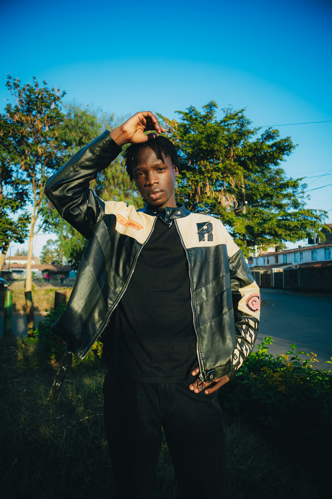

They buried us. We were seeeds.
They put us in chains and called it trade.
Africans were forced onto ships bound for the Americas between the 1500s and the 1860s. Nearly two million did not survive the crossing.
They took names, languages and families. Then they wrote the history books and left us out. The plan was to bury a people so deep that even their children would forget. It didn't work.
What you bury doesn't always stay buried.
In the dark, people kept things alive. Songs with escape routes hidden in the words. Recipes, prayers and stories passed from mouth to ear.
A seed goes into the ground and looks like it's gone. But it's only waiting. That's why our name has three e's: one seed is never enough. It takes generations.
They fought so we wouldn't have to.
Every name here is carried by something we make, so it travels further than any textbook.
We are what came up.
Today a whole generation walks into rooms that were once closed to them, and many of us don't know who opened the door. History is easy to lose when nobody wears it.
So we made it wearable. A tee with a date on it. A cap that carries a name. A chain with one link left open. Wear your freedom. Someone paid for it.
Shop the collection